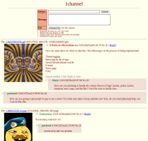
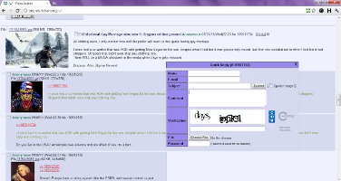

Objective
To secure a position that blends my customer service background and my computer background so that I can contribute to the success and growth of my employer. I am self-taught in most of the computer and program writing skills that I possess and can quickly learn new software and systems.
Portfolio
Mediation Assistant Android Application [Java/SQLite/Eclipse IDE]
A meditation session timer for Android. Users are able to share their sessions online and follow each other's progress. Features a modern interface with backward compatibility to Android 2.1
http://goo.gl/6bP1x
{kind=link}
 TinyIB PHP/MySQL/PostgreSQL/SQLite
A lightweight BBS emulating the popular Internet forum 4chan. Currently in use on many websites.
http://goo.gl/vrb1k
{kind=link}
 4chan 4chrome Google Chrome extension [JavaScript/jQuery]
Added many features while browsing 4chan. At the height of its popularity more than 75,000 people used the extension in a single day, according to Google Analytics. It has since been discontinued.
http://goo.gl/mL6mD
{kind=link}
Professional Experience
Sahara Pizza – Driver, Cook - Mt. Vernon, – July 2012 to March 2013
Responsible for accuracy of orders and delivery within the timelines set by the company. Responsible for maintaining safety at all times while delivering food. Responsible for alerting staff in regards to non-food supplies. Also assisted in the kitchen as needed with preparation of food and maintenance of food supplies. Responsible for matching receipts to money taken from customers and reporting money amounts to management.
Disneyland – Attractions Cast Member, Anaheim, CA – March 2009 to May 2012
Interacted with guests in order to maximize their experience of the ride. Received guest comments and complaints. Addressed issues with guests on the spot and forwarded to management as needed. Adhered to company guidelines while interacting with guests. Attended to guest safety and comfort during the loading and unloading of rides. Other assignments included: crowd control during parades and special events.Computer Skills
Windows: including Word, Excel, also; Linux (Ubuntu 12.10,) Eclipse IDE, some C/C++, PHP, Python, JavaScript, Java for Android, PostgreSQL, SQLite, MySQL, XML
Education
Sedro-Woolley Senior High, Sedro-Woolley, WA - 2008 graduating class